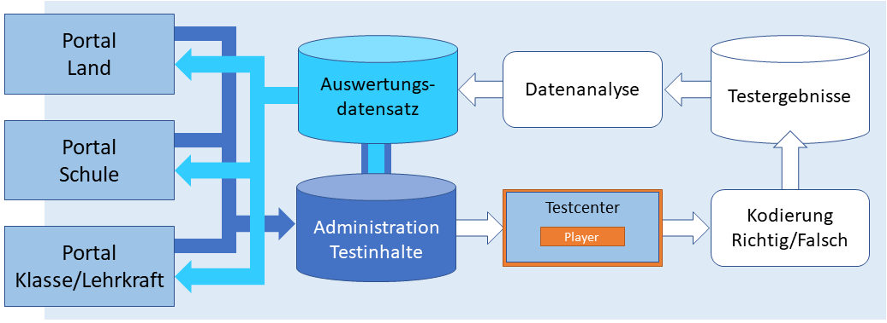
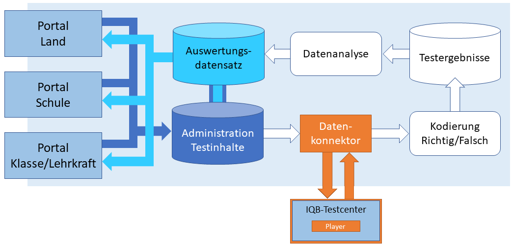

gantt title Digitalisierung des nationalen Bildungsmonitorings dateFormat YYYY-MM-DD axisFormat %Y tickInterval 12month section Machbarkeits-<br/>studie Antrag : 2017-07-01, 2017-12-31 Prototyp, Erprobung : 2018-01-01, 2019-12-31 Analyse : 2020-01-01, 2020-12-31 section TBA I Techn. Infrastruktur Antrag : 2020-01-01, 2020-12-31 IQB-Testcenter : 2021-01-01, 2023-12-31 IQB-Studio : 2021-06-01, 2024-06-30 Übertragung VERA-Aufgaben (kont.): active, 2021-01-01, 2025-12-31 section Testentwickung<br/>Bildungstrend Primar De Ma : 2022-09-01, 2024-03-01 Sek I De Fr En : active, 2023-09-01, 2025-03-01 Sek I Ma Nawi : 2025-09-01, 2027-03-01 section Testentwickung<br/>VERA Primar De Ma : active, 2024-03-01, 2026-12-31 Sek I De Fr En : 2025-03-01, 2027-12-31 Sek I Ma : 2027-09-01, 2029-12-31 section TBA II Adaptiv/Formativ Antrag : 2022-07-01, 2023-06-30 Entwicklung, Erprobung : active, 2023-07-01, 2026-06-30 section TBA III Rückmeldungen Antrag : 2022-07-01, 2022-12-31 Entwicklung, Erprobung : active, 2023-01-01, 2026-06-30
Einführung
Die Domäne der hier besprochenen Webanwendungen sind Lernstandserhebungen mit einer hohen Zahl an Testpersonen. Diese Erhebungen sind Teil des datengestützten nationalen Bildungsmonitorings und dienen der Unterrichtsentwicklung auf Klassenebene. Diese Dokumentation beschreibt die technischen und organisatorischen Aspekte der Durchführung.
TBA-Projekte der Länder
Begriff TBA
In Deutschland werden verschiedene Bezeichnungen für computerbasiertes Testen verwendet - CBA, eAssessment, digitales Testen usw.. TBA steht für Technologiebasiertes Assessment und erweitert die Palette der technischen Instrumente zum Testen über den Computer hinaus (z. B. digitale Stifte).
Die Umstellung der großen Studien des nationalen Bildungsmonitorings auf Online-Tests startete 2018 mit einem Projekt zur Feststellung der Machbarkeit einer Online-Testung. Vorarbeiten gab es seitens der universitären Projekte zepf (damals Universität Koblenz-Landau), und kompetenztest.de (Universität Jena) sowie des IQB. Auftrag an das IQB war 2021-2023, Webanwendungen zu entwickeln, die auch durch die Länder installiert und genutzt werden können.
Dabei sollte das IQB – wie in den Vorjahren auf der Basis von Papier – die Testaufgaben und Testsequenzen (Testhefte) zentral entwickeln und dann entweder selbst in bundesweiten Stichproben einsetzen (Bildungstrend), oder den Ländern für eigene landesweite Erhebungen zur Verfügung stellen (VERA).
Die obige Darstellung zeigt vereinfacht die technischen Entwicklungen und die laufende Umstellung der Instrumente des Bildungsmonitorings. Die Testentwicklung für den Bildungstrend führt nach Pilotierung und Normierung zur Erstellung der Kompetenzstufenmodelle. Parallel läuft die Umstellung der Testentwicklung für VERA. Sind die Kompetenzstufenmodelle verfügbar, erfolgt die Pilotierung der VERA-Testaufgaben ebenfalls über das IQB-Testcenter online und die digitale Auslieferung an die Länder ersetzt die Papier-Testhefte.
Wenn Sie hierzu inhaltliche Fragen haben, lesen Sie bitte hier weiter:
Hauptkomponenten
Der Fokus der Webentwicklungen lag zunächst auf der Testdurchführung. Das IQB-Testcenter wurde als isolierte Webanwendung entworfen, um flexibel in verschiedenen Szenarien eingesetzt zu werden. Es kann isoliert betrieben werden und alle Testinhalte sowie Testergebnisse werden dann manuell über ein Administrationsportal ausgetauscht. Es kann aber auch eingebettet sein in eine komplexe Datenbankstruktur. Die Beschreibung der Nutzung des IQB-Testcenters nimmt in dieser Dokumentation viel Raum ein. Dieser Abschnitt enthält auch viele technische Diskurse, um Installation und Betrieb zu unterstützen.
flowchart TD
R(Aufgabenentwicklung) --> H[Testaufgaben]
style R fill:#cdf
style H fill:white
H --> B
G[Testablauf] --> B
style G fill:white
A[Testpersonen] --> B(Testdurchführung)
style A fill:white
style B fill:#cdf
B --> K[Antworten]
style K fill:white
B --> J[Logdaten]
style J fill:white
H -.-> C(Kodierung)
style C fill:#cdf
K --> C
J --> C
C -->D(Analyse)
style D fill:#cdf
L(Vergleichsdaten) --> D
style L fill:white
D -->E[Bericht/Rückmeldung]
style E fill:white
Anschließend war erforderlich, die gesamten Prozesse der Aufgabenentwicklung umzustellen. Die große Anzahl der Aufgaben ist nur zu bewältigen, wenn ein intuitiv zu bedienendes System zur Verfügung steht, das die Aufgabenentwickler*innen direkt bedienen. Für die dabei entstandene Webanwendung “IQB-Studio” ist ebenfalls viel Raum in dieser Dokumentation vorgesehen. Insbesondere Aufgabenentwickler*innen sollen hier eine erste Starthilfe bekommen.
Die Verarbeitung der Ergebnisse (Kodierung, Datenanalyse) steht noch am Anfang. Die Webanwendungen dazu starten 2024 erst in die Erprobung. Daher gibt es in dieser Dokumentation nur kurze Funktionsbeschreibungen.
Das TBA-Projekt III zu Rückmeldungen ist hier der Vollständigkeit halber erwähnt. Das IQB ist daran nur beratend beteiligt, weshalb es in diese Dokumentation nicht einbezogen ist. Eine kurze Erläuterung der Projektziele finden Sie hier.
Szenarien Testdurchführung
Für eine effiziente Schätzung der Kompetenzen von Schülerinnen und Schülern sind spezielle Interaktionsformate erforderlich. Einfache Formular-Elemente reichen nicht aus. Das IQB hat bereits im ersten TBA-Projekt (Machbarkeitsstudie) innovative Formate erprobt und arbeitet ständig mit Wissenschaftler*innen der nationalen Fachdidaktik und der empirischen Bildungsforschung an der Weiterentwicklung.
Damit die Länder beim Einsatz der IQB-Aufgaben die Interaktionselemente nicht nachprogrammieren müssen, sondern stets zeitnah Neuentwicklungen verwenden können, hat eine Arbeitsgruppe ein Plugin-System entwickelt. Die Spezifikationen dieser Schnittstellen sind als Verona-Interfaces veröffentlicht.
Ein Land oder eine Einrichtung, die im Auftrag eine Lernstandserhebung mit IQB-Aufgaben durchführen soll, verfügen i.d.R. bereits über ein Portalsystem zur Administration, Durchführung und Auswertung. Um direkt die IQB-Aufgaben nutzen zu können, stehen zwei Szenarien zur Verfügung.
Szenario “Player”
Die folgende Darstellung zeigt vereinfacht die Funktionen, die üblicherweise ein System für Lernstandserhebungen erfüllen muss. Die Komponente, mit der der Test durchgeführt wird (hier “Testcenter”), ist eingebettet und eng verzahnt mit der Daten-Infrastruktur.

Hervorgehoben ist das Verona-Plugin “Player”. Für die IQB-Aufgaben steht ein spezieller Player zur Verfügung, der zu Beginn der Testung geladen wird und nachfolgend die Darstellung der Aufgaben übernimmt.
Szenario “IQB-Testcenter”
Alternativ kann auch die Webanwendung des IQB zur Durchführung eines Tests genutzt werden1. Der Server eines IQB-Testcenters verfügt über eine ausführlich dokumentierte Schnittstelle, mit der automatisiert die Daten zwischen dem Portalsystem des Landes bzw. der durchführenden Einrichtung und dem IQB-Testcenter ausgetauscht werden.

Der Einsatz des IQB-Testcenters kann vorteilhaft sein, wenn bestimmte Zusatzfunktionen wie Testleitungskonsole, System-Check oder adaptiver Testablauf im eigenen System nicht zur Verfügung stehen. Es kann nachteilig sein, wenn die Bedienung durch Lehrkräfte oder Schüler*innen einheitlich über alle digitalen Angebote eines Landes sein soll. Das IQB-Testcenter kann zwar angepasst werden (Farben, Logo), aber es könnte trotzdem exotisch wirken.
Autorensystem zur Aufgabenentwicklung: IQB-Studio
Das IQB entwickelt in jedem Jahr eine große Anzahl von Testaufgaben und steht damit an der Spitze in Deutschland. Für die Fächer Deutsch, Mathematik, Englisch und Französisch liefert das IQB jedes Jahr neue Aufgaben für die Durchführung von VERA (Primarstufe, Sekundarstufe I). Darüber hinaus werden auch Aufgaben für die Naturwissenschaften entwickelt.
Die Federführung der Aufgabenentwicklung liegt beim IQB. Abgeordnete Lehrkräfte liefern erste Entwürfe, die dann in enger Zusammenarbeit mit fachdidaktischen Expertinnen und Experten sowie den Wissenschaftler*innen des IQB bewertet, weiterentwickelt und intensiv erprobt werden. Zu einer Aufgabe werden nicht nur die visuelle Erscheinung und die Interaktion erarbeitet, sondern auch Vorschriften zur Auswertung (sog. Kodierung) und teilweise auch Material, das in den Schulen im Rahmen der Auswertung für die Unterrichtsentwicklung genutzt wird.
Diese Prozesse erfordern ein komplexes Autorensystem. Die Webanwendung “IQB-Studio” ist auf die Anforderungen der Aufgabenentwicklung am IQB zugeschnitten, kann aber auch durch interessierte Länder oder Einrichtungen installiert und betrieben werden. Auf diese Weise können Länder eine eigene Aufgabenentwicklung betreiben, um beispielsweise Erhebungen für die Ermittlung von Lernausgangslagen mit demselben technischen System wie VERA zu administrieren.
Fußnoten
Die IQB-Webanwendungen müssen jeweils auf Servern des Landes bzw. der durchführenden Einrichtung installiert und betrieben werden. Das IQB bietet keine Server hierfür an, tritt also nicht als Dienstleister für Serverhosting auf.↩︎